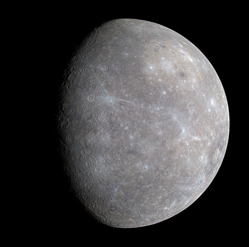

Меркурий

Меркурий — ближайшая к Солнцу планета Солнечной системы, наименьшая из планет земной группы. Названа в честь древнеримского бога торговли — быстрого Меркурия, поскольку она движется по небу быстрее других планет. Её период обращения вокруг Солнца составляет всего 87,97 земных суток — самый короткий среди всех планет Солнечной системы.